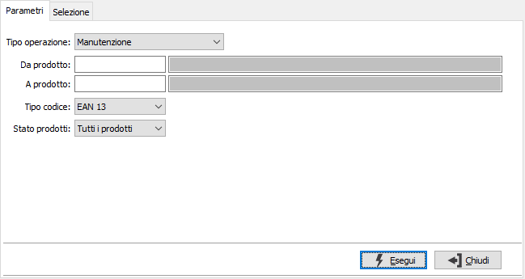
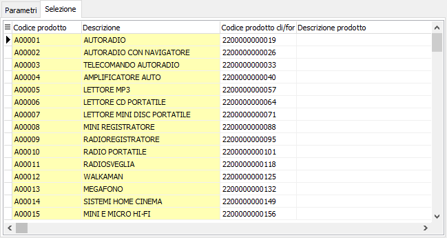

Barcode prodotti
Il programma consente di generare e manutenere i codici a barre dei prodotti. Le operazioni si svolgono su due sezioni separate, una per i parametri di selezione e l'altra per la selezione effettuata.

TIPO OPERAZIONE: determina l'operazione da svolgere: manutenzione o generazione codici a barre; per quest'ultima è possibile solo generare codici di tipo interno.
DA PRODOTTO: eventuale codice dell'articolo, presente in anagrafica Prodotti, da cui si desidera iniziare la selezione. Confermando a vuoto, la selezione inizia con il primo prodotto valido. Sul campo è attiva la ricerca (F9) sull’anagrafica prodotti.
A PRODOTTO: eventuale codice dell'articolo, presente in anagrafica Prodotti, a cui si desidera terminare la selezione. Confermando a vuoto, la selezione termina con l’ultimo valido. Sul campo è attiva la ricerca (F9) sull’anagrafica prodotti.
TIPO CODICE: identifica il tipo di codice a barre da utilizzare.
Stato prodotti: consente di selezionare tutti i prodotti o solo quelli attivi.
La pressione del pulsante Esegui inizia l'operazione selezionata il cui risultato viene visualizzato nella finestra Selezione.

In questa sezione vengono visualizzati i codici a barra eventualmente generati in automatico, oppure quelli risultato della selezione richiesta. Da qui è possibile modificare il codice a barre e la descrizione prodotto. Premendo il pulsante Salva (F10) vengono rese effettive le modifiche. Se attivo in configurazione Gestione POS il campo "Gestione barcode per unità di misura" sarà presente anche il campo unità di misura e sarà modificabile.